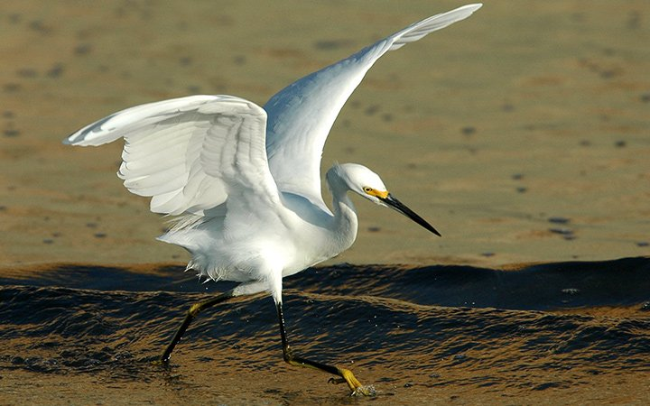

SONGS Mitigation Monitoring Program · UC Santa Barbara
230 acres of tidal flats, pickleweed, and fish. Thirteen years of scientific monitoring reveal the hidden dynamics of communities in one of Southern California's last remaining coastal wetlands.
Carpinteria Salt Marsh is a 230-acre coastal wetland in Santa Barbara County. As one of the few remaining intact salt marshes along the Southern California coast, it serves as critical habitat for a diverse community of fish species.
Since 2012, researchers have systematically monitored fish populations as part of the San Onofre Nuclear Generating Station (SONGS) mitigation program. This long-term dataset provides unprecedented insight into how fish communities respond to environmental change.
The data tells a story of ecological resilience—from tiny gobies that spend their entire lives in the marsh to juvenile halibut using it as a nursery before heading to open waters.

Photo: Christopher Woodcock / UC Natural Reserve System
Essential rearing grounds for juvenile fishes of commercial and recreational importance, including California halibut.
Productive feeding areas for resident species adapted to the marsh's fluctuating environmental conditions.
Shallow, vegetated waters provide protection from predators for small and juvenile fishes.
High primary productivity supports complex food webs that sustain diverse fish communities.
By exploring this observatory, you will be able to:
Salt marsh fishes face some of the most demanding conditions in the marine environment—and have evolved remarkable adaptations to thrive.
Water temperature swings 15–32°C (59–90°F) twice daily with tidal cycles. During low tide, shallow pools heat rapidly under the sun, then cool dramatically when oceanic water floods back in.
Warm water holds less dissolved oxygen. Combined with decomposing organic matter, waters frequently become hypoxic—especially at night when photosynthesis stops but respiration continues.
Tidal mixing creates gradients from nearly fresh (during rain) to hypersaline (>40 ppt) in evaporating pools. Fish must constantly osmoregulate to survive.
Twice daily, receding tides can trap fish in isolated pools or expose them to air. Species that cannot find refugia are excluded from this habitat.
The gobies that dominate salt marshes possess remarkable adaptations:
Flatfishes like California Halibut undergo one of nature's most remarkable transformations:
"We've caught longjaw mudsuckers that survived overnight in the cooler after being accidentally left behind. That air-breathing adaptation is very real—these fish are incredibly tough." — A. Stier, field observations
Salt marshes serve as essential nursery habitat for many commercially and ecologically important species:
Juvenile halibut spend their first 1–2 years in shallow estuarine habitats before moving offshore. Without healthy salt marshes, halibut populations would decline.
Female leopard sharks enter salt marshes specifically to give birth. Warm temperatures accelerate embryo development, and shallow waters exclude larger predators.
Like leopard sharks, female stingrays use warm, protected marsh waters for pupping—giving newborns a safe start to life.
Since European settlement, over 90% of California's tidal wetlands have been destroyed by agricultural conversion, urban development, port construction, and flood control projects.
Carpinteria Salt Marsh represents one of the last relatively undisturbed tidal wetlands in Southern California. Its fish community provides a valuable reference for understanding healthy wetland function—critical information for restoration projects.
The fish community serves as an indicator of ecosystem health. High diversity suggests good habitat quality; nursery species indicate ocean connectivity; resident specialists reflect stable marsh processes.
Wetlands drained for farming
Coastal cities expanding
Dredging and fill operations
Channelization and levees
A 13-year monitoring program using complementary sampling techniques to capture the full diversity of the fish community.
This dataset comes from the San Onofre Nuclear Generating Station (SONGS) Mitigation Monitoring Program, conducted by UC Santa Barbara's Marine Science Institute.
The program was established to monitor the ecological success of wetland restoration projects required as mitigation for impacts from the power plant's cooling water intake. Carpinteria Salt Marsh serves as a reference site—representing natural, undisturbed wetland function.
Small (0.43 m²) enclosure traps target resident gobies and other small benthic fish in tidal creek habitats. Traps are placed during low tide and retrieved after the tide recedes.
26,685 recordsLarger beach seines (~100 m²) sample the main channel, capturing mobile species like topsmelt, killifish, and juvenile halibut. Nets are deployed at standardized sites.
340,560 recordsComprehensive analysis using vegan (community ecology), Kendall (trend tests), lme4 (mixed models), and mgcv (GAMs).
R v4.5No sampling method captures all fishes equally. Understanding gear biases is essential for interpreting the data:
The complementary sampling design captures different components of the fish community:
All data is publicly available through the Environmental Data Initiative (EDI) repository.
Dive into 13 years of fish community data with interactive visualizations.
Cumulative counts across all seine surveys from 2012-2024. Topsmelt alone accounts for 46% of total catch. Shannon diversity H' = 1.35, Simpson = 0.66, Evenness = 0.37.
Annual mean fish density (fish/m²) by habitat. Mann-Kendall trend test indicates no significant long-term trend (tau = 0.026, p = 0.95). Density peaked in 2015 at 56.7 fish/m² and fluctuates with interannual variability.
Tidal creeks support significantly higher fish density (30.9 vs 17.7 fish/m², Welch's t = 3.23, p = 0.0016, Cohen's d = 0.52). Species richness does not differ between habitats (p = 0.17). Error bars show ± 1 SD.
Rarefaction curve (random permutation, 100 iterations) shows richness asymptote near 38 species after ~400 sampling events. The curve's plateau indicates comprehensive sampling coverage of the fish assemblage.
Non-metric multidimensional scaling (Bray-Curtis distance) reveals community composition shifts over time. Stress = 0.065 indicates excellent 2D representation. Mean beta diversity = 0.47; communities show moderate year-to-year variation.
Generalized Additive Model captures non-linear temporal dynamics: density ~ habitat + s(year, edf=3.73). The smooth term is highly significant (F=13.0, p<0.001). Model explains 31.4% of deviance (R² = 0.29), revealing cyclical abundance patterns.
Relative abundance patterns for the 10 most abundant species (normalized within each species). Reveals species-specific temporal dynamics: 10 core species appear >80% of years, while 22 satellite species occur sporadically.
Monthly CPUE (catch per unit effort) reveals strong seasonality with peak abundance in July. Summer months show highest fish use of the marsh, coinciding with recruitment of marine migrant species like topsmelt and shiner perch.
Community dominated by planktivores (62%) and omnivores (34%). Habitat affinity shows 59% marine migrants using the marsh as nursery habitat, with 41% year-round residents. Guild classification follows Elliott et al. estuarine fish guilds.
Year-to-year Bray-Curtis turnover averages 40% (range: 16-78%), indicating moderate community change. Highest turnover occurred 2013→2014 and 2019→2020. Community coefficient of variation = 0.63, suggesting dynamic but persistent assemblage structure.
Results from R statistical analysis (vegan, lme4, mgcv packages)
1.7x Higher
Fish density in tidal creeks vs main channel (p = 0.0016)
40% Turnover
Mean annual Bray-Curtis dissimilarity indicates moderate change
59% Marine
Proportion of fish using marsh as nursery habitat
46% Topsmelt
Single species dominates; top 5 species = 96% of catch
The most abundant species in the marsh.
This observatory was created by Adrian Stier and students in the Ocean Recoveries Lab at UC Santa Barbara to make 13 years of SONGS monitoring data accessible for teaching, research, and public engagement.
The data were collected by the UCSB Marine Science Institute as part of the San Onofre Nuclear Generating Station mitigation monitoring program. We wanted to transform these valuable long-term observations into an interactive resource that anyone—from undergraduate students to curious community members—can explore.
This observatory was developed for students in EEMB 106 (Biology of Fishes) at UCSB, but we hope it's useful for anyone interested in salt marsh ecology, coastal conservation, or data visualization.
View larger map · 34.4005°N, 119.5340°W · Carpinteria, CA
Data collection funded by Southern California Edison as part of the SONGS mitigation program. Analysis and visualization supported by UCSB.
Special thanks to the Marine Science Institute field crews who have monitored these wetlands since 2012.